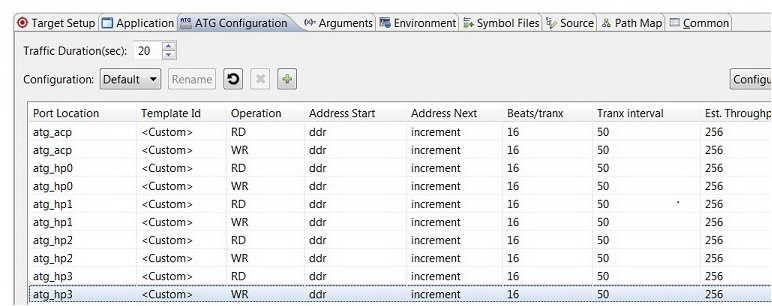

In the Project Explorer, right-click the hardware platform and select
Debug As > Debug Configurations.
Under Performance Analysis, select Performance Analysis on
<filename>.elf.
You can use the ATG Configuration tab to define multiple traffic configurations
and select the traffic to be used for the current run. The following
figure shows the traffic that is defined in the Default configuration.
The port location is taken from the Hardware handoff file. If no ATG
was configured in the design, the ATG Configuration tab is empty.

You can use the ATG Configuration dialog box to add
and edit configurations.
To add a configuration to the list of configurations, click the +
button.
To edit a configuration, select the Configuration: drop-down
list to choose the configuration that you want to edit.
For ease of defining an ATG configuration, you can create Configuration
Templates. These templates are saved for the user workspace and can be
used across the Projects for ATG traffic definitions. To create a template,
do the following:
Click Configure Templates.
Click the + button to add a new user defined configuration
template.
The newly created template is assigned a Template ID with the pattern
of "UserDef_*" by default. You can change the ID and also define the
rest of the fields.
You can use these defined templates to define an ATG configuration.
To delete a Configuration Template, select it and click the X
button.
Tip: In an ATG configuration, to set a
port so that it does not have any traffic, set the Template ID for that port to
None.